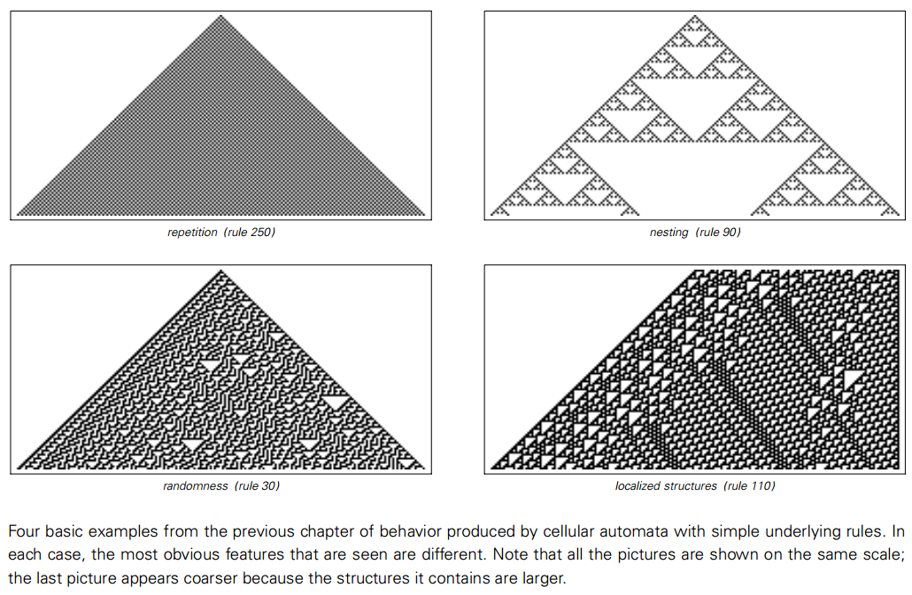

3.1 寻找共性
在上一章开头我们提出了：“简单模型能做什么”的问题。我们举出了一些元胞自动机模型的具体例子作为迈向答案的一步。
我们找到的基本行为类型被呈现在下一页的图片里。在第一张图片里只有简单的重复，只组成了一个很简单的图案。在第二张图片里出现了复杂的细节，但总的来说只出现了很规律的结构。
但是在第三张图片里找不到这样的规律性了，出现了随机的行为。最终在第四张图片里仍然出现了更复杂的行为——产生的复杂结构以复杂的方式相互作用。
在开始没有迹象表明简单的程序可以产生如此不同，如此复杂的行为。但看过这些例子之后，问题变成了“它们有多少代表性？”。只是元胞自动机在特定的规则下会产生这样的行为，还是事实上这种行为广泛存在于所有简单计算模型？
在这一章我的目的就是要通过广泛地考量很多不同的计算模型来回答这个问题。在某种程度上我的方法是像一个自然主义者那样工作-----探索和研究简单计算模型中存在的不同形式。
我开始考虑更一般的元胞自动机，接下来我开始思考一连串其他种类的元胞自动机——使用基本的结构与在前一章中由黑白细胞组成的阵列渐行渐远。
我的发现是：无论使用什么样的基本规则，呈现的结果和我们已经见过的元胞自动机的行为非常相似。
看来，这些基本计算模型产生的行都很有普遍性。在一定程度上最终是这个发现使我建造我在这本书中描述的这门条理清晰的新科学变成可能-------并且用它去阐释很多现象，独立于产生这些现象的系统的细节。
(p52)